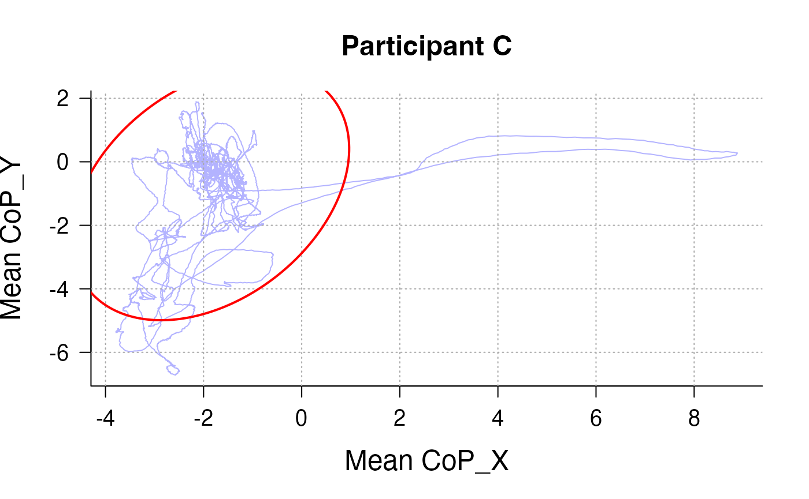

Introduction
From a broad perspective, two types of postural indicators can be
computed from the BalanceMate package:
- Indicators that measure average displacements (i.e., CoP-X and CoP-Y)
- Indicators that measure variability in displacements (e.g., Sway Path Length)
Whereas the former family is useful for researchers interested in motivation (approach, and avoidance), the latter is of interest for researchers assessing loss of stability through substance use, or freezing behaviours when facing threat (among other examples).
95% confidence ellipse area are popular indicators of the variability of CoP displacements. A 95% confidence ellipse area will quantify the area (in cm^2) of an ellipse that contains 95% of the data points (see figure below).
Note: the files are stored as Rdata to reduce the size of the package – however the command only accepts txt files, hence it is required to first convert Rdata to text files before running the examples
# 1. Locate the installed extdata/ folder (contains only .RData now)
path_extdata <- system.file("extdata", package = "BalanceMate")
# 2. Find all .RData (case‐insensitive)
rdata_files <- list.files(
path_extdata,
pattern = "\\.[Rr][Dd]ata$",
full.names = TRUE
)
# 3. Convert each .RData to a .txt in a temp directory
tmpdir <- tempdir()
for (f in rdata_files) {
load(f) # e.g. loads object “Postural_DataA” into your session
nm <- tools::file_path_sans_ext(basename(f))
write.table(
get(nm),
file = file.path(tmpdir, paste0(nm, ".txt")),
sep = ",",
row.names = FALSE,
col.names = FALSE,
quote = FALSE
)
}
# 4. Merge from the tempdir
Data <- Merge_PosData(
directory_path = tmpdir,
SampleRate = 100,
SessionDuration= 100
)
SpaghettEllipse(Data, participant_id_col = "file_name", participant_id = "Postural_DataA.txt")Details of computation of this indicators can be found in Quijoux et al. (2021).
Note: the wrapper function
compute_postural_indicators can also compute this
indicator.
Example Usage
compute_ellipse_area computes the area of the 95%
Confidence ellipse at the specified level, either:
- Participant level (1 measure per session)
- Time-bin level (1 measure per specified time bin).
You collected 6 participants viewing passively some pictures for 100s.
rdata_files <- list.files(
path_extdata,
pattern = "\\.[Rr][Dd]ata$",
full.names = TRUE
)
# 3. Convert each .RData to a .txt in a temp directory
tmpdir <- tempdir()
for (f in rdata_files) {
load(f) # e.g. loads object “Postural_DataA” into your session
nm <- tools::file_path_sans_ext(basename(f))
write.table(
get(nm),
file = file.path(tmpdir, paste0(nm, ".txt")),
sep = ",",
row.names = FALSE,
col.names = FALSE,
quote = FALSE
)
}
# 5. Merge from the tempdir
Data <- Merge_PosData(
tmpdir, # first, unnamed argument is the folder of .txt files
SampleRate = 100,
SessionDuration= 100
)You can compute the 95% Confidence ellipse area at the participant level :
BalanceMate::compute_ellipse_area(data = Data,
CoPX_col = "CoP_X",
CoPY_col = "CoP_Y",
ID = "file_name"
)
#> participant_id ellipse_area
#> Postural_DataA.txt Postural_DataA.txt 13.737247
#> Postural_DataB.txt Postural_DataB.txt 21.458026
#> Postural_DataC.txt Postural_DataC.txt 33.064110
#> Postural_DataD.txt Postural_DataD.txt 1.136107
#> Postural_DataE.txt Postural_DataE.txt 1.739002
#> Postural_DataF.txt Postural_DataF.txt 1.151094We see that participants A, B, and C have large CoP areas. This might require further investigation. We can, for instance, visualise their displacements:
SpaghettEllipse(Data, participant_id_col = "file_name", participant_id = "Postural_DataA.txt", Title = "Participant A")
SpaghettEllipse(Data, participant_id_col = "file_name", participant_id = "Postural_DataB.txt", Title = "Participant B")
SpaghettEllipse(Data, participant_id_col = "file_name", participant_id = "Postural_DataC.txt", Title = "Participant C")
SpaghettEllipse(Data, participant_id_col = "file_name", participant_id = "Postural_DataD.txt", Title = "Participant D")
SpaghettEllipse(Data, participant_id_col = "file_name", participant_id = "Postural_DataE.txt", Title = "Participant E")
SpaghettEllipse(Data, participant_id_col = "file_name", participant_id = "Postural_DataF.txt", Title = "Participant F")
Indeed, participants A, B, and C displayed large CoP displacements that resulted in an inflation of their ellipse. It is important to note that sessions for each participants were only 100 seconds long, without training. This would be a risky experimental protocol. It would deserve performing robust analyses or managing outliers. It could also deserve standardisation of the data such as grand mean centering, or using a baseline.
Alternatively, you can compute areas at a specified time bin level. For instance, we want to assess variations in CoP areas between the first, second, third, and fourth sections of the protocol. This would amount to time bins of 25 seconds.
BalanceMate::compute_ellipse_area(data = Data,
CoPX_col = "CoP_X",
CoPY_col = "CoP_Y",
ID = "file_name",
time_col = "Time",
epoch_length = 25)
#> participant_id epoch ellipse_area
#> Postural_DataA.txt.1 Postural_DataA 1 14.9887877
#> Postural_DataA.txt.2 Postural_DataA 2 5.1984315
#> Postural_DataA.txt.3 Postural_DataA 3 11.7834086
#> Postural_DataA.txt.4 Postural_DataA 4 3.3516385
#> Postural_DataB.txt.1 Postural_DataB 1 10.1220360
#> Postural_DataB.txt.2 Postural_DataB 2 3.0550039
#> Postural_DataB.txt.3 Postural_DataB 3 31.1279425
#> Postural_DataB.txt.4 Postural_DataB 4 14.9577646
#> Postural_DataC.txt.1 Postural_DataC 1 3.2061183
#> Postural_DataC.txt.2 Postural_DataC 2 50.3555678
#> Postural_DataC.txt.3 Postural_DataC 3 21.0271193
#> Postural_DataC.txt.4 Postural_DataC 4 12.4279592
#> Postural_DataD.txt.1 Postural_DataD 1 1.1952544
#> Postural_DataD.txt.2 Postural_DataD 2 0.5557472
#> Postural_DataD.txt.3 Postural_DataD 3 0.6094455
#> Postural_DataD.txt.4 Postural_DataD 4 0.5704826
#> Postural_DataE.txt.1 Postural_DataE 1 0.5763133
#> Postural_DataE.txt.2 Postural_DataE 2 0.7619673
#> Postural_DataE.txt.3 Postural_DataE 3 0.6864903
#> Postural_DataE.txt.4 Postural_DataE 4 2.4814184
#> Postural_DataF.txt.1 Postural_DataF 1 1.2332284
#> Postural_DataF.txt.2 Postural_DataF 2 0.4559154
#> Postural_DataF.txt.3 Postural_DataF 3 0.8926132
#> Postural_DataF.txt.4 Postural_DataF 4 1.2095153This approach gives some insight into the differences between the participants A, B, C (large movements) and participants D, E, F (small movements): zooming in time bins reveal that, although some bins of 25 seconds are associated with more immobility in participants A (Bin 2 and 4), B (bin 2), and C (bin 1), they exhibited generally large movements in other bins, suggesting an individual difference rather than a mere “blip”.
Here, if the protocol consisted in a training phase during the 25 first seconds, we could use each measure for the first epoch as a baseline to correct for the variations in the three following periods. Most studies include baseline corrections to account for inter-participant variability. Another possibility is to use mixed models to account for this variance (using participants as a random variable, see Monéger et al., unpublished manuscript [feel free to ask me if the study is still unpublished by the time you read this vignette])
Note: The command also contains an argument to modify the percentage of confidence of the ellipse. If for any reason we might prefer a stricter ellipse, we could. For instance, say we want to be more conservative and use a 80% confidence ellipse area:
BalanceMate::compute_ellipse_area(data = Data,
CoPX_col = "CoP_X",
CoPY_col = "CoP_Y",
ID = "file_name",
confint = .8)
#> participant_id ellipse_area
#> Postural_DataA.txt Postural_DataA.txt 7.3802478
#> Postural_DataB.txt Postural_DataB.txt 11.5281868
#> Postural_DataC.txt Postural_DataC.txt 17.7634808
#> Postural_DataD.txt Postural_DataD.txt 0.6103660
#> Postural_DataE.txt Postural_DataE.txt 0.9342677
#> Postural_DataF.txt Postural_DataF.txt 0.6184181
SpaghettEllipse(Data, participant_id_col = "file_name", participant_id = "Postural_DataA.txt",conf_level = .8, Title = "Participant A")
SpaghettEllipse(Data, participant_id_col = "file_name", participant_id = "Postural_DataB.txt", conf_level = .8,Title = "Participant B")
SpaghettEllipse(Data, participant_id_col = "file_name", participant_id = "Postural_DataC.txt",conf_level = .8, Title = "Participant C")
SpaghettEllipse(Data, participant_id_col = "file_name", participant_id = "Postural_DataD.txt",conf_level = .8, Title = "Participant D")
SpaghettEllipse(Data, participant_id_col = "file_name", participant_id = "Postural_DataE.txt",conf_level = .8, Title = "Participant E")
SpaghettEllipse(Data, participant_id_col = "file_name", participant_id = "Postural_DataF.txt",conf_level = .8, Title = "Participant F")Further readings
Quijoux, F., Nicolaï, A., Chairi, I., Bargiotas, I., Ricard, D., Yelnik, A., Oudre, L., Bertin-Hugault, F., Vidal, P. P., Vayatis, N., Buffat, S., & Audiffren, J. (2021). A review of center of pressure (COP) variables to quantify standing balance in elderly people: Algorithms and open-access code. Physiological reports, 9(22), e15067. https://doi.org/10.14814/phy2.15067
Monéger, J., Chaby, L., Besche-Richard, C., & Vergilino-Perez, D. (submitted in Emotion). Should I Stay or Should I go: An Exploration of Spontaneous Postural Behaviours Following Threatening Emotion Perception.
See also the Processing chapter of the BalanceMate guide book